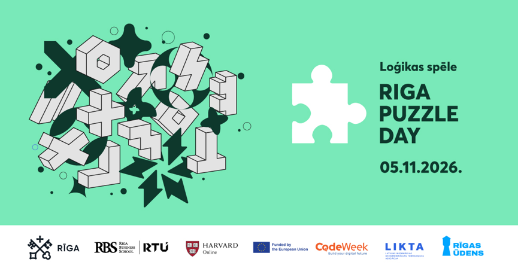

Izmantojiet iespēju -aicinām Rīgas 11. un 12. klašu skolēnu komandas piedalīties / “Riga Puzzle Day".🧩 05.11.2026

Labdien,
Vēlos atgādināt par iespēju Rīgas 11. un 12. klašu skolēniem padalīties jauniešu tik ļoti iecienītajās loģiskas spēlēs “Riga Puzzle Day”, kas norisināsies jau ceturto reizi un ko Rīgas pašvaldība rīko sadarbībā ar Riga Business School.
Tā kā ir pieejamas vēl dažās vietas un ņemot vērā, ka pagājušā nedēļa bija skolēnu brīvlaika nedēļa, pieteikt komandas dalībai loģikas spēlē variet līdz trešdienas (28.oktobra) dienas beigām (komandu skaits ierobežots).
 https://ej.uz/
https://ej.uz/
Paldies, visiem, kas jau pieteikušies! Komandu dalībnieki un atbildīgie skolotāji dalības apstiprinājumu uz saviem e-pastiem saņems šīs nedēļas laikā!
Detalizētu informāciju par spēli - lūdzu skatīt zemāk!
_ _ _ _ _
Labdien!
Vai Jūsu skolā ir vidusskolēni, kuriem patīk atrisināt šķietami neatrisināmo, domāt citādi un sacensties nevis zināšanu daudzumā, bet domāšanas asumā?
- novembrī jau ceturto reizi aicinām Rīgas 11. un 12. klašu skolēnus uz loģikas spēli “Riga Puzzle Day”. Spēle notiks klātienē konferenču centrā “Fantadroms”, Gustava Zemgala gatvē 76, Rīgā.
“Riga Puzzle Day” ideja un spēles formāts aizgūts no Hārvarda Universitātes CS50 “Puzzle Day”. Šogad dalībniekus gaida gan īsi tiešsaistes izaicinājumi, gan astoņi loģikas uzdevumi, kurus komandas risinās pašu izvēlētā secībā. Atrast pareizo ceļu līdz atbildei būs jāprot, liekot lietā loģiku, radošumu, kritisko domāšanu un komandas darbu.
Programmēšanas priekšzināšanas nav nepieciešamas. Arī iepriekšējā gada spēles komunikācijā uzsvērts, ka “Puzzle Day” būtība ir nestandarta problēmu risināšana, radošā domāšana un sadarbība.
Un Rīgas jauniešiem šis izaicinājums patīk. Pagājušajā gadā spēlei pieteicās 106 komandas un 316 skolēni no Rīgas skolām.
Kā piedalīties?
 Dalībnieki: Rīgas pašvaldības vispārizglītojošo skolu 11. un 12. klašu skolēni
Dalībnieki: Rīgas pašvaldības vispārizglītojošo skolu 11. un 12. klašu skolēni Komanda: 2–3 skolēni
Komanda: 2–3 skolēni Kad: 2026. gada 5. novembrī
Kad: 2026. gada 5. novembrī Kur: “Fantadroms”, Gustava Zemgala gatve 76, Rīga (iepriekšējā gada norises vieta)
Kur: “Fantadroms”, Gustava Zemgala gatve 76, Rīga (iepriekšējā gada norises vieta) Izaicinājums: trīs stundas uzdevumu risināšanai
Izaicinājums: trīs stundas uzdevumu risināšanai Internetu izmantot drīkst
Internetu izmantot drīkst
No Jūsu skolas aicinām dalībai pieteikt ne vairāk kādivas komandas. Ja dalībai vēlas pieteikties vairāk komandu, lūgums sazināties ar Zani Bitenieci (kontakti zemāk).
Komandas līdz 26. oktobrim piesaka skolas direktora nozīmēts darbinieks:https://ej.uz/
Lūdzam skolas direktoru nozīmēt par reģistrāciju atbildīgo darbinieku un informāciju par iespēju piedalīties nodot 11. un 12. klašu skolēniem, klašu audzinātājiem, matemātikas, datorikas un fizikas skolotājiem.
Ieskats “Riga Puzzle Day” pagājušā gada spēlēs: https://www.youtube.com/watch?
Kamēr skolēni sacentīsies loģikas izaicinājumos, pavadošajiem skolotājiem būs iespēja piedalīties profesionālās un personīgās kompetences pilnveides sesijās.
Meklējiet savas skolas asākos prātus un dodiet viņiem iespēju izmēģināt, cik tālu var aizvest loģika, zinātkāre un laba komanda!
Uz tikšanos “Riga Puzzle Day”!
Organizatoru komandas vārdā,
Zane Biteniece
Rīgas valstspilsētas pašvaldības Izglītības, kultūras un sporta departamenta
Direktora padomniece izglītības tehnoloģiju un inovāciju jautājumos
+371 6701 2917
+371 294 99 767
Kr.Valdemāra iela 5, Rīga, LV-1010
|
@agenskalna.valsts |
avgdome@gmail.com |
@avgdome |
@agenskalniesi |